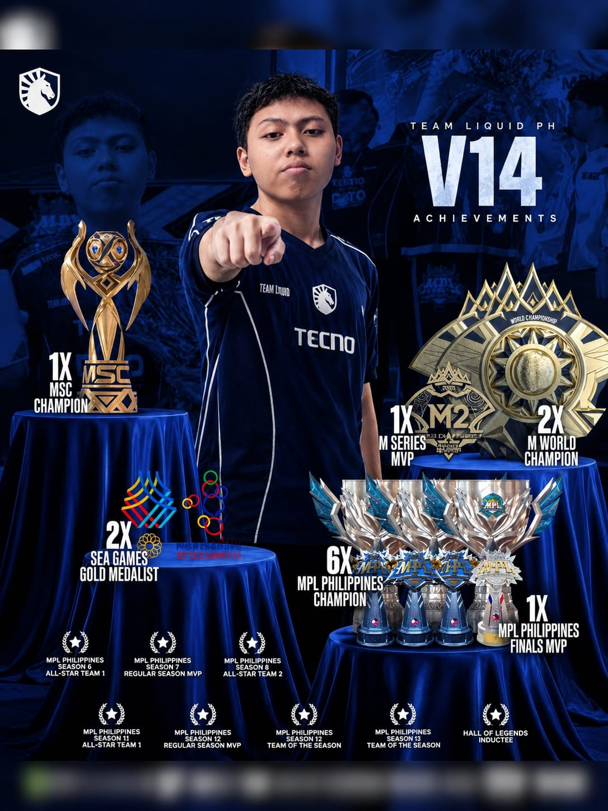

PRESTASI V14
V14 > KarlTzy
Juara MPL
- Juara MPL PH Season 6 – Bersama Bren Esports.
- Juara MPL PH Season 11 – Bersama ECHO.
- Juara MPL PH Season 15 – Bersama Team Liquid PH.
- Juara MPL PH Season 16 – Bersama Team Liquid PH.
- Juara MPL PH Season 16 – Bersama Team Liquid PH.
🏆Kompetisi Internasional
- Juara M2 World Championship (2021) – Bersama Bren Esports.
- Juara M4 World Championship (2023) – Bersama ECHO.
- Juara MSC x EWC 2025 (Mid Season Cup / Esports World Cup) – Bersama Team Liquid PH.
- edali Emas SEA Games 2019
🏅 Penghargaan Individu & Rekor Dunia
- Pemain pertama yang memenangkan 2 gelar M-Series (M2 & M4)
- Finals MVP M2 World Championship
- MVP MPL PH Season 6.
- Mobile Esports Player of the Year 2025
- SMART Player of the Year (2023) oleh MPL PH Press Corps Awards
- Pemain pertama yang meraih "Three-Peat" di MPL PH secara berturut-turut (S15–S17) bersama rekan setimnya.
- Pemegang rekor Savage terbanyak di M-World Championship
- Top Kills Leade
